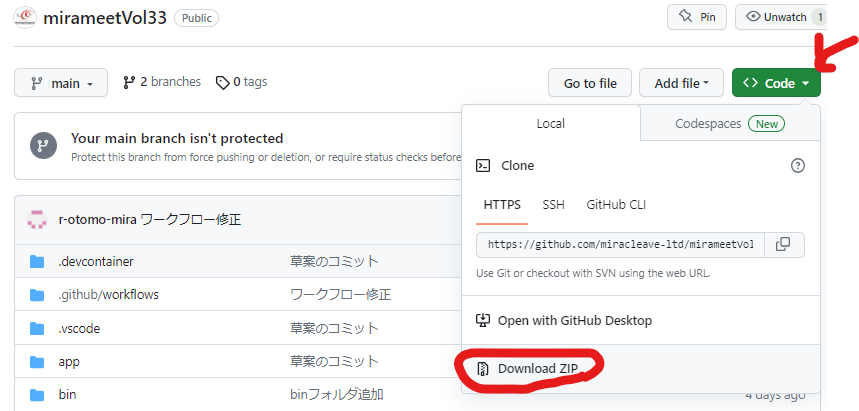
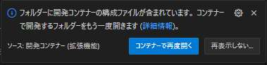
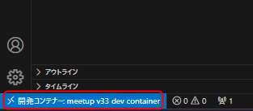

初心者向けDockerハンズオン！Rails環境構築を通してDockerの特徴に触れてみよう！
事前準備
- VSCodeインストール
- Dockerインストール
- Gitインストール、GitHubアカウントの作成
今回の流れ（環境構築 ～ メール送信機能作成、データベースバージョン変更）
Railsのスキャフォールディング機能を用いて、ユーザー登録と同時にメール送信を行うことの出来る画面を作成。
その後、データベース（PostgreSQL）のバージョン変更を実施しDockerの特徴に触れていきます。
2. Docker + VSCode の構築
2.1. プロジェクトのクローン
githubページ：https://github.com/miracleave-ltd/mirameetVol33
mirameetVol33-main.zipを解凍し、そのディレクトリをユーザー直下に配置します。
※画像はWindowsの場合


2.2. mirameetVol33-mainフォルダに移動 ～ VScodeで起動
# Windows
cd C:\Users\mirameetVol33-main
# Mac
cd ~/mirameetVol33-main
# Windows・Mac共通
code .
2.3. コンテナ内のフォルダをVSCodeで開く
Dev Container拡張機能を利用し、コンテナ内のVScodeに接続します。
・コンテナで再度開くを選択

・ウインドウが表示されない場合は左下からコンテナで再度開く


・左下に開発コンテナと表示されていれば成功です

補足：開発コンテナーについて

別のVSCodeが立ち上がるが、devcontainer.json の設定によりプラグインの入れなおしは不要

2.4. Railsプロジェクトを起動
実行設定の Debug v33 web から Rails を起動する

http://localhost:3000/
画面が表示されれば環境構築は完了となります
補足：各ファイルの解説
Dockerfile
元になるイメージと変更する手順を記述する。
今回は ruby のバージョン 3.2.2 を指定しています。
また、Docker イメージのビルドはキャッシュが利用できるので Gemfile を先に追加して bundle install をすることにより、時間のかかるインストール処理をキャッシュすることができます。
docker-compose.yml
複数のコンテナをまとめて管理するための定義です。
今回は DB のコンテナである v33_db, Rails を起動する v33_web, メールサーバーを起動する v33_mail の3つのコンテナを定義しています。
.devcontainer/devcontainer.json
コンテナ内の VSCode についての定義です。 VSCode を起動するコンテナの指定やインストールするプラグインを定義できます。
3. 外部連携のモック化
mailhog という開発用メールサーバーを利用して簡単なメール送信機能を作成して
動作の確認が出来るかを確認しましょう！
mailhogはdocker-compose.ymlの以下部分に定義されていてDevContainer起動時点で 既に環境が作成されており使用できる状態です。
v33_mail:
container_name: v33_mail
image: mailhog/mailhog
ports:
- "8025:8025"
ユーザー画面管理画面作成
Railsのscaffold機能を使用して、簡単なユーザー画面を作成します。 以下コマンドを実施します。
rails g scaffold User name:string email:string
その後マイグレーションしましょう。
rails db:migrate
メール送信機能追加
rails generate mailer User
作成されたuser_mailer.rbを以下の通り修正します。
・user_mailer.rb
class UserMailer < ApplicationMailer
default from: 'noreply@meetup.com'
def welcome_email
@user = params[:user]
mail(
subject: '登録完了',
to: @user.email
)
end
end
メール本文を作成
touch app/views/user_mailer/welcome_email.text.erb
作成されたメール本文定義ファイルに以下の通り記載しましょう。
<%= @user.name %>様
新規登録ありがとうございます。
引き続きミートアップをお楽しみください。
app/controllers/users_controller.rb を以下の追記と記載された部分のみ追記。
# POST /users or /users.json
def create
@user = User.new(user_params)
respond_to do |format|
if @user.save
+ UserMailer.with(user: @user).welcome_email.deliver_later
format.html { redirect_to user_url(@user), notice: "User was successfully created." }
format.json { render :show, status: :created, location: @user }
else
format.html { render :new, status: :unprocessable_entity }
format.json { render json: @user.errors, status: :unprocessable_entity }
end
end
end
config/enviroments/development.rb に以下２行のメール送信用設定値を追加
config.action_mailer.delivery_method = :smtp
config.action_mailer.smtp_settings = { address: 'mailhog', port: 1025 }
以下アドレスからユーザー画面を確認してみましょう。 http://localhost:3000/users/
メール送信して mailhog から内容が確認出来るか確認しましょう！ http://localhost:8025/
補足：その他開発用のメールサーバーについて
Railsの場合はletter_openerというGemが存在するのでそちらを使用しても同等の操作をすることが可能です。
4. DBのバージョンアップ
4.1 別バージョンのDBを起動
Dockerで環境構築するメリットとして、ミドルウェアのバージョンアップ等も容易に実施することが出来ることが挙げられます。 現在PostgreSQL13で起動しているので、こちらを15にアップデートしてみましょう。
ローカル環境に直接PostgreSQLがインストールされている場合は、単純にpg_upgradeすれば良い場面もあるかもしれませんが、 例えば、案件A：ver13、案件B：ver13の状態で案件Aだけ15に上げたいという状況だといかがでしょう？
バックアップを取得
バージョン13のコンテナからバックアップを取得します。 以下をコマンドプロンプトより実行します。
docker-compose exec db pg_dumpall --clean --username postgres > backup.sql
その後データベースコンテナの削除を行います。
docker container ls -a
docker container rm [コンテナID]
ボリュームも同様に削除します。
docker volume ls
docker volume remove v33-volume
バージョンをアップデート
※並行して稼働させるなら順番等考える必要あり。
v33_db:
container_name: v33_db
- image: postgres:13
+ image: postgres:15
ports:
- "5432:5432"
volumes:
- v33-volume:/var/lib/postgresql/data
environment:
- TZ=Asia/Tokyo
- POSTGRES_USER=v33
- POSTGRES_PASSWORD=meetupv33
その後、一度dev containerの接続を閉じて、再度ReOpen Containerする。
リストア
cat backup.sql | docker-compose exec -T v33_db psql --username v33
ユーザーの登録が出来るか動作確認をして問題無ければDBのバージョンアップは完了となります。
補足：ボリュームとコンテナの単純再作成
ローカル環境においては、既に登録済みのデータを諦めることが出来るのであれば 途中のバックアップやリストアの手順をスキップして単純にコンテナの再作成をすることでアップデートをすることも可能です。 テストデータがseedで用意されているのであれば、よほど特殊なデータで無い限りは単純再作成でも良いかもしれません。
ローカル環境のCleanUp
最後に構築したDocker環境の削除を行います。
コンテナの停止
次のコマンドを実行し、コンテナの状態を確認します。
docker container ls -a
# CONTAINER ID IMAGE COMMAND CREATED STATUS PORTS NAMES
# b173bb2c3e2e mirameetvol33_v33_web "/bin/sh -c 'echo Co…" 3 days ago Up 25 minutes 0.0.0.0:3000->3000/tcp v33_web
# 23f502d1c58a postgres:13 "docker-entrypoint.s…" 3 days ago Exited (137) 2 days ago v33_db
# 901edcf563d4 mailhog/mailhog "MailHog" 3 days ago Exited (2) 2 days ago v33_mail
上記で確認できたCONTAINER IDを次のコマンドで利用し、コンテナを停止します。
docker container stop [CONTAINER ID]
イメージの削除
次のコマンドを実行し、作成したコンテナイメージを確認します。
docker image ls
# REPOSITORY TAG IMAGE ID CREATED SIZE
# mirameetvol33_v33_web latest 40dc866fa6c0 4 days ago 1.08GB
# postgres 13 efc790b27960 13 days ago 407MB
# mailhog/mailhog latest 4de68494cd0d 3 years ago 392MB
上記で確認できたIMAGE IDを利用して、ビルドされたイメージを削除します。
docker image rm -f [IMAGE ID]
次のようなメッセージが確認できたら、イメージが正常に削除出来ています。
Untagged: mirameetvol33_v33_web...
フォルダの削除
最後にフォルダを削除します。
Macの場合
# 一つ上の階層に移動
cd ../
# mirameetVol33-mainフォルダが存在しているかを確認
ls
# mirameetVol33-mainフォルダが存在している場合、下記コマンドを実行しフォルダを削除
rm -rf mirameetVol33-main
Windowsの場合
# 一つ上の階層に移動
cd ../
# mirameetVol33-mainフォルダが存在しているかを確認
dir
# mirameetVol33-mainフォルダが存在している場合、下記コマンドを実行しフォルダを削除
rd /s /q mirameetVol33-main
# PowerShellをご使用の方はこちらのコマンドをご使用下さい
Remove-Item mirameetVol33-main -Recurse -Force
以上。